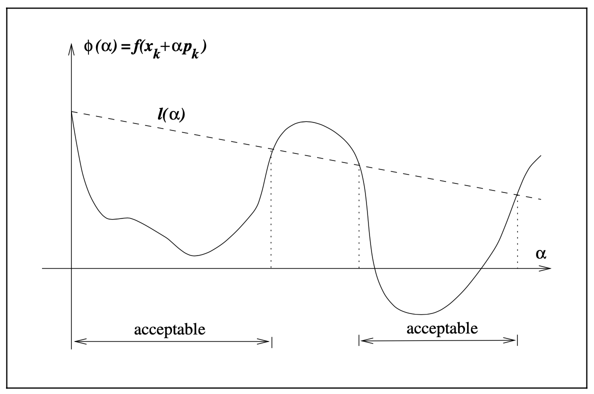

3.1 Introduction¶
In computing the step lenght \(\alpha_k\), we face a tradeoff. We would like to choose \(\alpha_k\) to give a substantial reduction of \(f\), but at the same time we do not want to spend too much time making the choice. The ideal choice would be the global optimizer of the univariate function \(\phi(\cdot)\) defined by
but in general, it is too expensive to identify this value. More practical strategies perform an inexact line search to identify a step length that achieves adequate reductions in \(f\) at minimal cost.
Typical line search algorithms try out a sequence of candidate values for \(\alpha\), stopping to accept one of these values when certain conditions are satisfied. The line search in done in two stages: A bracketing phase finds an interval containing desirable step lengths, and a bisection or interpolation phase computes a good step length within this interval.
We now discuss various termination conditions for line search algorithms and their effectiveness.
A simple condition we could impose on \(\alpha_k\) is to require a reduction in \(f\), that is, \(f(x_k + \alpha_k p_k) < f(x_k)\). However, the insufficient reduction in \(f\) at each step may cause it to fail to converge to the minimizer. Hence we need to enforce a sufficient decrease condition.
The Wolfe Conditions¶
A popular inexact line search condition stipulates that \(\alpha_k\) should first of all give sufficient decrease in \(f\), as measured by the inequality:
for some constant \(c_1 \in (0, 1)\). This is sometimes called the Armijo condition. The intervals on which this condition is satisfied are shown in the figure below. In practice, \(c_1\) is chosen to be quite small, say \(c_1 = 10^{-4}\).
{kind=link}
Note that the Armijo condition is satisfied on all sufficiently small values of \(\alpha\). To rule out unacceptably short steps we introduce a second requirement, called the curvature condition
for some constant \(c_2 \in (c_1, 1)\). The left-hand-side is simply the derivative \(\phi'(\alpha_k)\), so the curvature ensures that the slope of \(\phi\) at \(\alpha_k\) is larger than \(c_2\) times the initial slope \(\phi'(0)\). Typical values of \(c_2\) are 0.9 for Newton or quasi-Newton method, and 0.1 for nonlinear conjugate gradient method.
The sufficient decrease and curvature conditions are known collectively as the Wolfe conditions. We restate here for future reference
with \(0 < c_1 < c_2 < 1\). We can modify the curvature condition to force \(\alpha_k\) to lie in at least a broad neighborhood of a local minimizer or stationary point of \(\phi\). The *strong Wolfe conditions` require \(\alpha_k\) to satisfy
with \(0 < c_1 < c_2 < 1\).
Lemma 3.1. Suppose that \(f: \mathbb{R}^n \to \mathbb{R}\) is continuously differentiable. Let \(p_k\) be a descent direction at \(x_k\), and assume that \(f\) is bounded below along the ray \(\{x_k + \alpha p_k \mid \alpha > 0\}\). Then if \(0 < c_1 < c_2 < 1\), there exist intervals of step lengths satisfying the Wolfe conditions and the strong Wolfe conditions.
The Wolfe conditions are scale-invariant. They can be used in most line search methods, and are particularly important in the implementation of quasi-Newton methods.
The Goldstein Conditions¶
The Goldstein conditions can be stated as a pair of inequalities
with \(0 < c < 1/2\). The second inequality is the sufficient decrease condition, whereas the first inequality is introduced to control the the step length.
A disadvantage of the Goldstein condition is that the first inequality may exclude all minimizers of \(\phi\). The Goldstein conditions are often used in Newton-type methods but are not well-suited for quasi-Newton methods that maintain a positive definite Hessian approximation.
Sufficient Decrease and Backtracking¶
If we choose candidate step lengths appropriately by using the backtracking approach, we can dispense the curvature condition. In its most basic form, backtracking proceeds as follows.
The initial step length \(\bar{\alpha}\) is chosen to be 1 in Newton and quasi-Newton methods. In practice, the contraction factor \(\rho\) is often allowed to vary at each iteration. For example, it can be chosen by safeguard interpolation. We need ensure only at each iteration we have \(\rho \in [\rho_{lo}, \rho_{hi}]\), for some fixed constants \(0 < \rho_{lo} < \rho_{hi} < 1\).
This simple and popular strategy for terminating a line search is well-suited for Newton methods but is less appropriate for quasi-Newton and conjugate gradient methods.